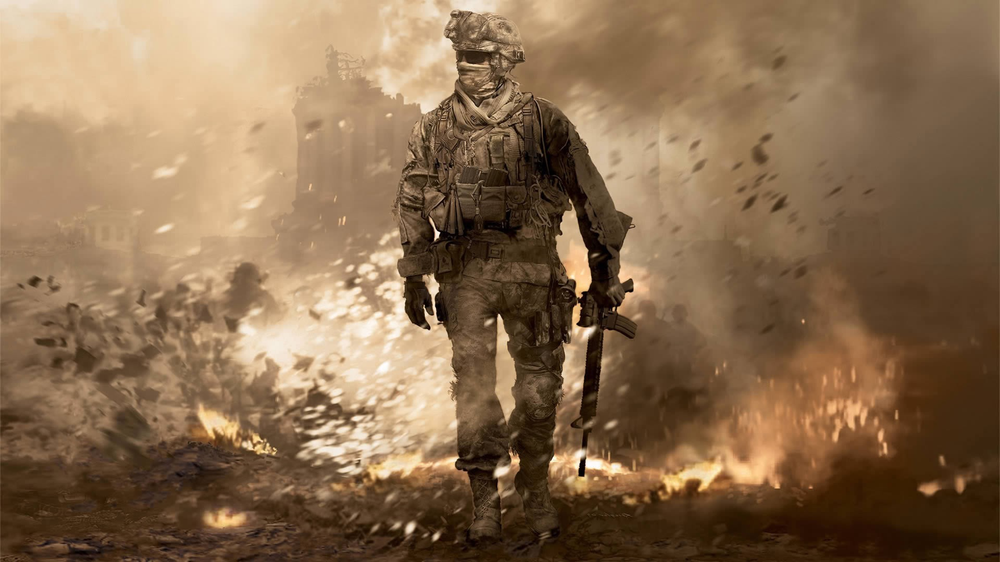

I first started playing Call of Duty a long time ago after I got my first game console, a nintendo wii. The first game had horrible input lag and was not very user friendly. However, the game, at its core, had a very promising concept along with great gameplay and amazing graphics.
Then I got an xbox 360 and that is when I knew this game would take a big chunk out of my time because it was such a great game. My fist game on xbox was Call of Duty: Modern Warfare 2. This game was the next game in the "Modern Warfare" series. It boasted an incredible storyline as well as improved graphics and a very addicting multiplayer.
But thats all history, click the navbar on the left to find out a little about each game.